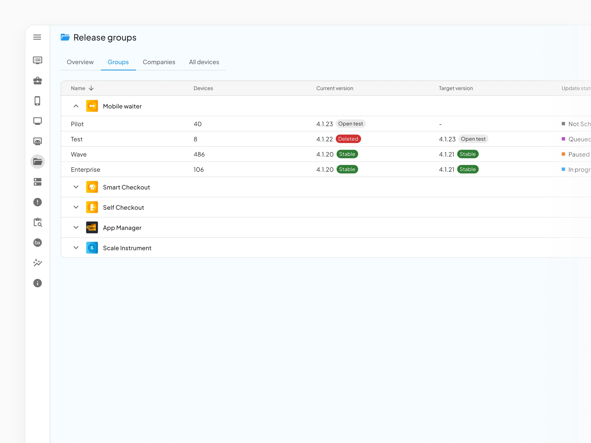
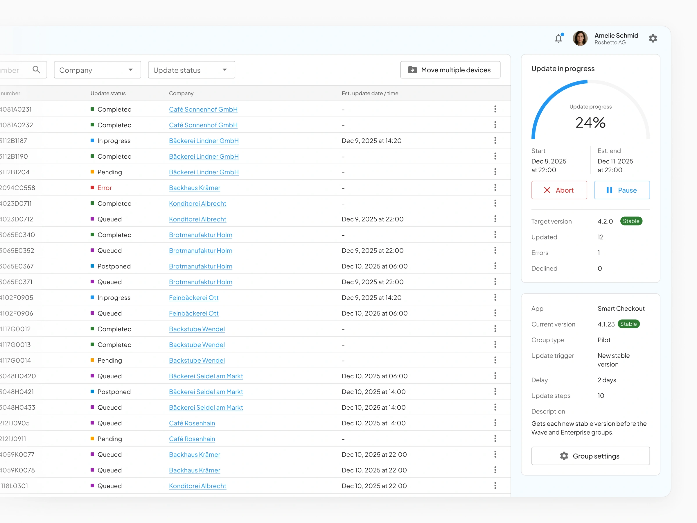
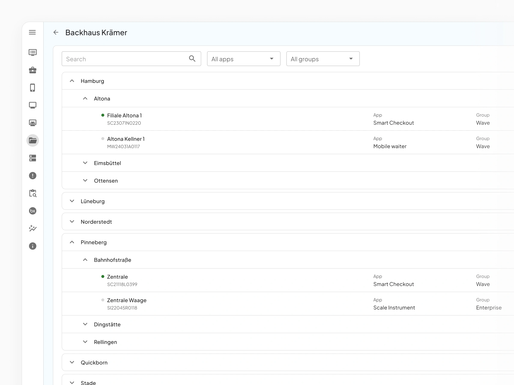
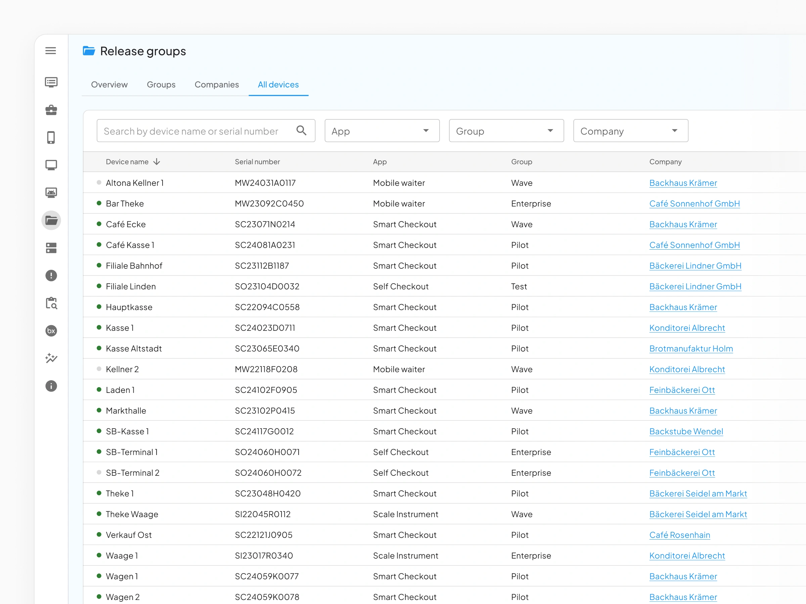
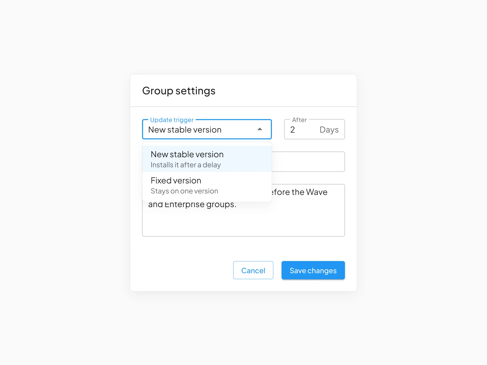
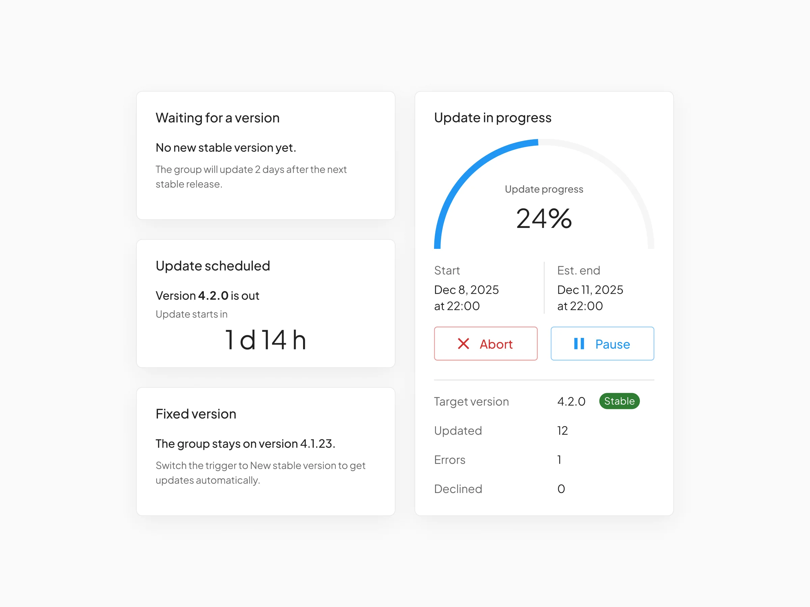
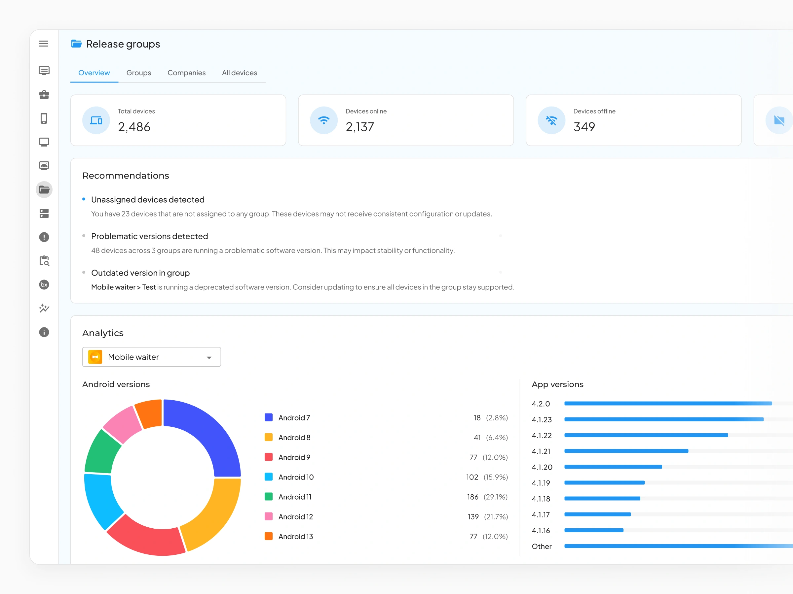

Internal tools · B2B · Web app
Rolling out updates to client devices in stages
A new part of HS-Soft's internal device console. HS-Soft makes POS and self-checkout software for bakeries, cafés and restaurants. I turned the CTO's idea of release groups into a tool that lets support send a version to the right devices, follow the rollout and stop it.

Context
HS-Soft's apps run on POS and self-checkout devices in client shops. Support could only update every device at once or go device by device. Getting a version onto a specific set of devices, like a pilot or a large client, was slow, mistakes were common, and updates took a big share of support's time.
Goal
Turn release groups, an idea that so far lived only in the CTO's head and in developer chats, into a tab of the internal console. Support should be able to send a version to one group, watch it roll out and stop it if something goes wrong.
Outcome
Everything I designed shipped to production. Support no longer updates devices by hand: they set a group's rule, the console rolls the version out in steps, and large clients stay on a stable version while new ones are tried on pilot devices.
Constraints
- Interface
- A new tab in a working console, built only from its existing MUI components
- Direction
- The CTO set the frame: release groups, moves through a wizard, no bulk edit
- Groups
- The team hadn't agreed whether groups are fixed or created by admins
- Risk
- A wrong version on a client device is expensive, so risky actions had to be hard to do by accident
Learning how support works
Support ran the updates, so I started with them. Before designing, I asked the team how they updated devices and what they called things, so the console would use their words. The design was then reviewed at our twice-weekly meetings with the CTO and the developers.
Groups belong to an app
Versions are released per app, and every device runs one app, so groups belong to an app too. Mobile waiter, Smart Checkout, Self Checkout and the others each have their own Pilot, Test, Wave and Enterprise groups. Each group shows how many devices it has, its current and target version, and where its update stands.


Trade-off
Some of the team wanted a fixed set of groups, others wanted admins to create their own. I designed the screens to work either way. Fixed groups shipped, and when a new group is needed, the CTO adds it in code.
Three ways into the same devices
Support doesn't always start from a group. A client calls about their tills, or someone needs one device by its serial number. So the console has three ways in: groups, a company's page with its branches, and a list of all devices. Moving a device works the same from each of them.


One rule per group for when to update
Each group follows a single rule: install every new stable version after a delay, or stay on a fixed version. Updates go out in steps, a set number of devices at a time, and the panel next to the device list shows where the group stands. Pause holds the rollout. Abort stops it for good but rolls nothing back: a second, unplanned update across live shops is riskier than a few devices on a newer version. Those devices stay flagged until the group's next update brings everyone to the same version.


Moving devices: a wizard, not bulk edit
Moving a device to another group changes the software it runs. The CTO saw it as a rare and risky action, not something like sorting chats in a messenger, so it goes through four steps: company, devices, new group and confirmation. The last step says plainly that the group's version will be installed on every selected device.

Trade-off
I suggested bulk editing right in the table, which would be faster for support. The CTO kept the wizard to prevent mistakes. A single device can still be moved from its row menu, with the same warning.
Recommendations instead of charts
The CTO asked for an overview with statistics: Android versions, app versions, devices online. Those charts don't tell support what to do next, so I suggested dropping the page.

Trade-off
The CTO wanted the overview, so the charts stayed. I put recommendations above them: devices without a group, devices on a problematic version and groups running an outdated one.
Room for the next feature
Some device statuses, like Postponed and Declined, had no use yet when the console shipped. I was designing daytime updates for the checkout app at the same time, where a cashier can postpone an update, so the console already had a place for them.